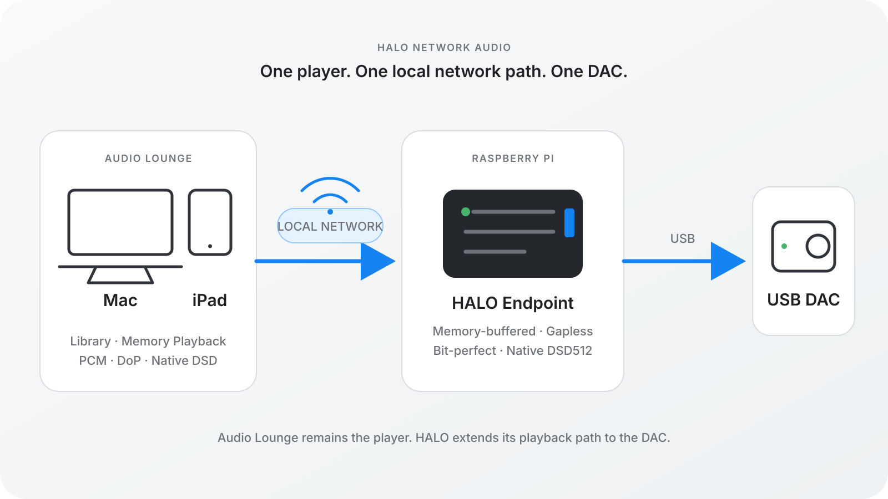

Audio Lounge Blog · August 31, 2026 · 12 min read
HALO, Roon, UPnP, HQPlayer and Diretta
They can all put distance between a music player and a DAC. They do it with very different ideas about where the library, playback engine, processing and control should live.

The useful question is not “which protocol wins?” It is “which system do you want to live in?” Network audio is architecture before it is a feature list.
Roon is built around a central server and its ecosystem. UPnP/DLNA is an interoperable set of roles. HQPlayer centers sophisticated digital signal processing. Diretta focuses deeply on the behavior of the host-to-target transport. HALO begins with a narrower product decision: Audio Lounge should remain the player, and its existing audio path should be able to reach a USB DAC elsewhere on the local network.
The short comparison
HALO
Audio Lounge is the center. Its library, queue, Memory Playback engine, format handling, optional PCM upsampling and output selection stay together. A lightweight HALO Endpoint adds its own memory-buffered, gapless output stage beside the USB DAC. Best suited to listeners who want one integrated Mac or iPad application for owned music, NAS access and high-resolution local-network playback.
Roon / RAAT
The Roon Server is the center. Roon separates Server, Control and Output, with RAAT connecting the server to endpoints. Its strengths include rich metadata, certified Roon Ready hardware, zones and synchronized multi-room playback. It is a broader server ecosystem, not simply a way for one player to reach one DAC.
UPnP / DLNA
Interoperable roles are the center. A MediaServer exposes content, a Control Point chooses it and a MediaRenderer plays it. Components can come from different vendors. That flexibility is the attraction, although supported formats, gapless behavior and control can vary with the particular server, controller and renderer combination.
HQPlayer / NAA
DSP is the center. HQPlayer is designed around advanced filters, modulators, convolution and conversion choices, while a Network Audio Adapter can keep the output device lightweight and close to the DAC. It is the natural fit when deep user-controlled signal processing is the primary purpose of the system.
Diretta
The host-to-target transport is the center. Diretta sends small packets at short, regular intervals and aims to keep target processing and power demand steady. It can integrate with compatible host software and dedicated target hardware. Its philosophy reaches further into transport timing and endpoint electrical behavior than HALO’s product-specific design.
Roon: a complete server ecosystem
Roon’s own architecture describes three roles: Server, Control and Output. The server owns the music library and playback intelligence; control devices operate it; RAAT carries audio to output devices. RAAT is designed for bit-perfect transport, device discovery, high-resolution PCM and DSD, and synchronized playback across zones.
That structure is powerful when the goal is to make Roon the center of a whole-home music system. It also means adopting a server as the authoritative library and playback engine.
HALO makes a different trade. There is no separate core for the HALO Endpoint to consult. Audio Lounge on the Mac or iPad remains the application the listener browses, searches, queues and plays from. HALO extends its output; it does not replace its library or engine.
UPnP/DLNA: flexibility through separation
The UPnP AV architecture separates media storage, control and rendering. That makes it possible to mix a server from one vendor, a control app from another and a renderer from a third. Few network-audio approaches offer broader choice.
The same flexibility makes the final experience dependent on the combination. Format negotiation, seeking, gapless transitions, queue ownership and DSD support are not guaranteed to feel identical across renderers.
Audio Lounge already has an owned-music library, queue, decoder and playback engine. HALO avoids translating that product into a second generic media model just to reach the DAC. Endpoint discovery and selection happen directly inside Audio Lounge.
HQPlayer: processing as the destination
HQPlayer is built for listeners who want to explore sophisticated digital processing: selectable oversampling filters, noise shapers, modulators, convolution and high-rate PCM or DSD output. Its Network Audio Daemon/NAA arrangement moves the final output stage to a lightweight network device.
That makes HQPlayer and NAA conceptually close to HALO in one respect: important work stays with the main application while a focused endpoint sits beside the DAC. The product priorities are different. HQPlayer makes fine-grained DSP choice the main event. Audio Lounge includes optional PCM upsampling, but its larger goal is an elegant all-in-one experience for browsing, organizing and faithfully playing a personal library.
Diretta: the network transport as an audiophile component
Diretta also uses a Host and Target, but its design centers on sending packets at frequent, regular intervals. Diretta describes this as a way to average processing and power-consumption fluctuations at the Target. Its ecosystem includes compatible software, target devices and implementations intended for dedicated audiophile systems.
That is a serious and distinct engineering philosophy. HALO does not claim to reproduce it. HALO uses bounded buffering to absorb normal network variability and keep the ALSA output supplied; it does not make claims about packet cadence changing the analog performance of a DAC.
The practical distinction is equally important on macOS. HALO is implemented directly as an Audio Lounge output path. The listener does not need to make a network target appear as a system-wide audio device or assemble a compatible host chain.
What is specifically different about HALO?

Audio Lounge prepares the output. The HALO Endpoint advertises the formats and rates the attached DAC can accept, receives the stream into memory ring buffers and writes it to the selected ALSA hardware device. Its two-buffer design can stage the next track before the current one finishes, then switch only when the active buffer drains—the exact boundary needed for true gapless playback.
Compatible endpoint hardware and DACs can receive bit-perfect PCM, DoP, or Native DSD up to DSD512 without converting the DSD playback path to PCM. Optional PCM upsampling remains an explicit Audio Lounge choice. That combination of memory-buffered transport, gapless playback and Native DSD is unusually complete for a network endpoint built directly into a Mac and iPad music player.
HALO is intentionally point-to-point rather than multi-room. It is intentionally tied to Audio Lounge rather than designed as a universal renderer. Those are limits, and they are also how the experience remains coherent.
Which one is right for you?
Choose Roon when a rich server-centered library, certified endpoint ecosystem and multi-room playback are central. Choose UPnP/DLNA when mixing interoperable servers, controllers and renderers matters most. Choose HQPlayer when advanced DSP and conversion are the reason for building the system. Explore Diretta when transport cadence, dedicated targets and endpoint electrical behavior are the focus.
Choose HALO when you want Audio Lounge to be the one place for the music you own—local files and NAS libraries, Memory Playback, Hi-Res PCM, Native DSD, USB DACs and network output—without placing another music server or playback application in the middle.
That all-in-one approach is rare on macOS and iPadOS. It is also the simplest explanation of why HALO exists.